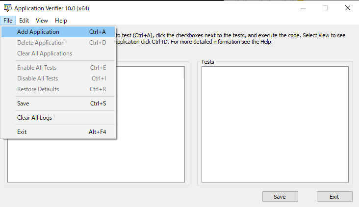
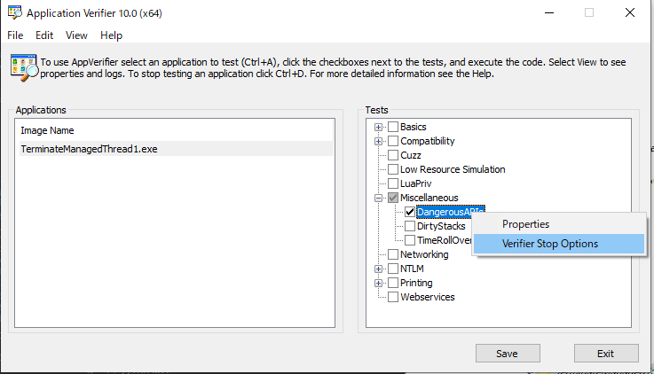
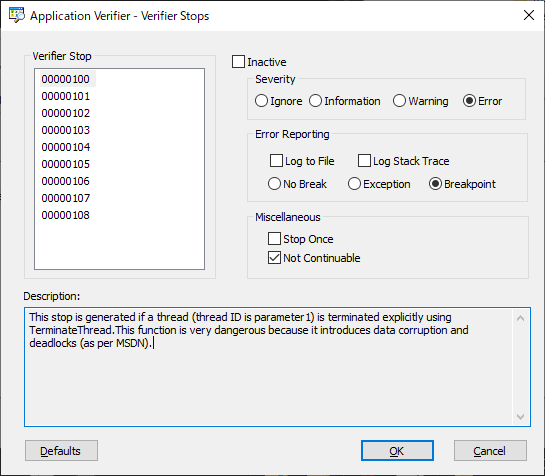
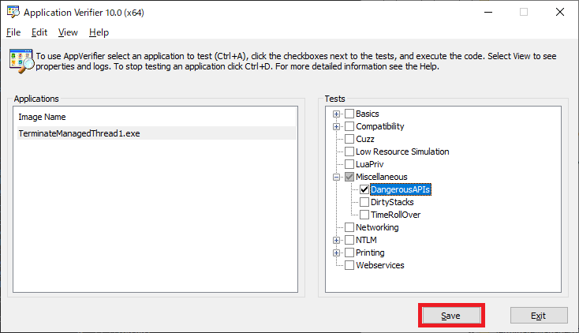

こんにちは、Japan Developer Support Core チームの松井です。今回は、.NET アプリケーションでマネージド スレッドを TerminateThraed したときに発生する .NET ランタイムの内部エラーについてご案内します。
.NET ランタイムの内部エラーあるいは致命的な実行エンジン エラーは、.NET アプリケーションで発生するトラブルとしてよくお問い合わせをいただくものの一つです。このエラーは .NET ランタイムが処理を継続できないような状況を検出した場合に発生しますが、その原因は .NET ランタイム自身の問題だけでなくアプリケーションの問題である場合もあり、トラブルシュートが難しくなる傾向があります。本記事でご案内する内容は .NET ランタイムの内部エラーを引き起こす一例ですが、問題のあるコーディングの回避や検出、トラブルシュート時の参考になれば幸いです。
1. TerminateThread 関数について
TerminateThread 関数は Win32 API の一つで、スレッドを強制的に終了させます。Remarks セクションには以下のように、対象のスレッドが何をしているのか完全に把握していて終了時に実行する可能性があるすべてのコードを制御する場合にのみ使用すべきであることが記載されています。
TerminateThread is a dangerous function that should only be used in the most extreme cases. You should call TerminateThread only if you know exactly what the target thread is doing, and you control all of the code that the target thread could possibly be running at the time of the termination. For example, TerminateThread can result in the following problems:
- If the target thread owns a critical section, the critical section will not be released.
- If the target thread is allocating memory from the heap, the heap lock will not be released.
- If the target thread is executing certain kernel32 calls when it is terminated, the kernel32 state for the thread’s process could be inconsistent.
- If the target thread is manipulating the global state of a shared DLL, the state of the DLL could be destroyed, affecting other users of the DLL.
.NET アプリケーションにおいて、マネージド スレッドは .NET ランタイムによって制御されます。マネージド スレッドが破棄される場合の処理をアプリケーション開発者が制御することはできませんし、.NET ランタイムがマネージド スレッド上でどのような処理をしているのか完全に把握することもできません。つまり、マネージド スレッドを TerminateThread 関数で安全に強制終了する方法はありません。後に詳しく見ていきますが、実際に、マネージド スレッドを TerminateThread 関数で強制的に終了すると、GC の処理でアクセス違反などの問題が発生して .NET ランタイムの内部エラーによってアプリケーションが異常終了するなど予期しない動作が起こる可能性があります。
.NET アプリケーションの中で意図的に TerminateThread 関数でスレッドを終了するようなコードを書く方は恐らくあまりいないのではないかと思いますが、サードパーティのライブラリが内部で TerminateThread 関数を利用するケースや、アンマネージド スレッド上でマネージド コードが呼ばれている場合 (例えば COM 呼び出し可能ラッパーや C++/CLI の混合アセンブリの呼び出し) など、あるスレッドが .NET ランタイムに関連していることが分かりにくいケースもありますので注意が必要です。
2. サンプル コード
今回利用するサンプル コードは以下のとおりです。普通に終了した場合や .NET Framework の Thread.Abort メソッドを使用した場合なども比較のため含めています。
1 | using System; |
3. 発生する事象
マネージド スレッドを TerminateThread 関数で強制的に終了してしまった場合、.NET ランタイムは不正な状態となり予期しない動作を引き起こす可能性があります。発生する事象の例としては、不定なタイミングで発生する .NET ランタイムの内部エラーによる異常終了が挙げられます。”不定なタイミング” とは、具体的にはガベージ コレクションが実行されるタイミングです。ガベージ コレクションは .NET ランタイムがマネージド オブジェクトのメモリ割り当てで必要となったときに実行されるので、基本的に開発者がタイミングを正確に把握することはできず “不定なタイミング” で問題が顕在化することになります。このような形でアプリケーションが異常終了するとき、イベント ログには一般的に .NET Runtime と Application Error の 2 つのイベント ログが記録される場合が多いです。
CLR 2 系 (.NET Framework 3.5 SP1 以前) の場合
.NET Runtime - イベント ID 1023
.NET Runtime version 2.0.50727.9151 - 致命的な実行エンジン エラーが発生しました (00007FFB8D8C6D4E) (80131506)
Application Error - イベント ID 1000
障害が発生しているアプリケーション名: TerminateManagedThread1.exe、バージョン: 1.0.0.0、タイム スタンプ: 0xaf13df87
障害が発生しているモジュール名: mscorwks.dll、バージョン: 2.0.50727.9151、タイム スタンプ: 0x5e75a06b
例外コード: 0xc0000005
障害オフセット: 0x00000000001b2480
障害が発生しているプロセス ID: 0x%9
障害が発生しているアプリケーションの開始時刻: 0x%10
障害が発生しているアプリケーション パス: %11
障害が発生しているモジュール パス: %12
レポート ID: %13
障害が発生しているパッケージの完全な名前: %14
障害が発生しているパッケージに関連するアプリケーション ID: %15
CLR 4 系 (.NET Framework 4 以降) の場合
.NET Runtime - イベント ID 1023
アプリケーション:TerminateManagedThread1.exe
フレームワークのバージョン:v4.0.30319
説明: .NET ランタイムの内部エラーのため、プロセスが中止されました IP 00007FFBC6B6ABDD (00007FFBC69F0000)、終了コード 80131506。
Application Error - イベント ID 1000
障害が発生しているアプリケーション名: TerminateManagedThread1.exe、バージョン: 1.0.0.0、タイム スタンプ: 0xe9f53ccf
障害が発生しているモジュール名: clr.dll、バージョン: 4.8.4400.0、タイム スタンプ: 0x60b90751
例外コード: 0xc0000005
障害オフセット: 0x000000000017abdd
障害が発生しているプロセス ID: 0x2760
障害が発生しているアプリケーションの開始時刻: 0x01d79b67304d0a32
障害が発生しているアプリケーション パス: C:\Users\user1\source\repos\TerminateManagedThread1\bin\Debug\TerminateManagedThread1.exe
障害が発生しているモジュール パス: C:\Windows\Microsoft.NET\Framework64\v4.0.30319\clr.dll
レポート ID: 6cb37b21-5ea7-4a7e-b02c-00e2cd549146
障害が発生しているパッケージの完全な名前:
障害が発生しているパッケージに関連するアプリケーション ID:
.NET Core / .NET の場合
.NET Runtime - イベント ID 1023
Application: ConsoleApp2.exe
CoreCLR Version: 5.0.921.35908
.NET Version: 5.0.9
Description: The process was terminated due to an internal error in the .NET Runtime at IP 00007FFB62A99D38 (00007FFB62980000) with exit code 80131506.
Application Error - イベント ID 1000
障害が発生しているアプリケーション名: TerminateManagedThread1.exe、バージョン: 1.0.0.0、タイム スタンプ: 0x60e896d9
障害が発生しているモジュール名: coreclr.dll、バージョン: 5.0.921.35908、タイム スタンプ: 0x60e88dd3
例外コード: 0xc0000005
障害オフセット: 0x0000000000119d38
障害が発生しているプロセス ID: 0x5518
障害が発生しているアプリケーションの開始時刻: 0x01d79b7007b2e0d4
障害が発生しているアプリケーション パス: C:\Users\user1\source\repos\TerminateManagedThread1\bin\Debug\TerminateManagedThread1.exe
障害が発生しているモジュール パス: C:\Program Files\dotnet\shared\Microsoft.NETCore.App\5.0.9\coreclr.dll
レポート ID: 4ca5c8ea-b47d-42d2-8e74-b6a78e66a19d
障害が発生しているパッケージの完全な名前:
障害が発生しているパッケージに関連するアプリケーション ID:
4. デバッグ
Windows Error Reporting の機能でアプリケーションのクラッシュ ダンプを取得すると、以下のような状況が確認できます。
0:000> .lastevent
Last event: 2760.5434: Access violation - code c0000005 (first/second chance not available)
debugger time: Sat Aug 27 17:18:45.195 2021 (UTC + 9:00)
0:000> .ecxr
rax=000000001b69ea88 rbx=00000000008fc9f0 rcx=00007ffbc71baa00
rdx=0000000000a63148 rsi=00000000008fc9f0 rdi=00000000008fc500
rip=00007ffbc6b6abdd rsp=00000000008fd270 rbp=00000000008fd370
r8=0000000000000000 r9=00007ffbc7233850 r10=0000000000000001
r11=ffffffffffadfc5b r12=0000000000000001 r13=00000000008fe760
r14=00007ffbc6afff60 r15=0000000000a630e0
iopl=0 nv up ei pl nz ac pe cy
cs=0033 ss=002b ds=002b es=002b fs=0053 gs=002b efl=00010211
clr!GCToEEInterface::GcScanRoots+0x143:
00007ffb`c6b6abdd 483908 cmp qword ptr [rax],rcx ds:00000000`1b69ea88=????????????????
以下は例外発生時のマネージド スタックです。こちらは特に異常は見られません。
0:000> !ClrStack
OS Thread Id: 0x5434 (0)
Child SP IP Call Site
00000000008feb78 00007ffbc6b6abdd [HelperMethodFrame: 00000000008feb78]
00000000008feca0 00007ffb67490cc2 TerminateManagedThread1.Program.Main() [C:\Users\user1\source\repos\TerminateManagedThread1\Program.cs @ 72]
00000000008fef78 00007ffbc69f6953 [GCFrame: 00000000008fef78]
以下は例外発生時のアンマネージド スタックです。frame 06 の clr!JIT_NewArr1 で配列のメモリ割り当てが試みられたものの、マネージド ヒープに十分なサイズがなく frame 05 で GC が実行され、その先で最終的に GC のマーク フェーズで参照元を持つオブジェクトを走査してマークしていくときの処理でアクセス違反が発生していたことが確認できます。
0:000> knL
# Child-SP RetAddr Call Site
00 00000000`008fd270 00007ffb`c6b02018 clr!GCToEEInterface::GcScanRoots+0x143
01 00000000`008fe730 00007ffb`c6b02b5f clr!WKS::gc_heap::mark_phase+0x17f
02 00000000`008fe7d0 00007ffb`c6b02a73 clr!WKS::gc_heap::gc1+0xf1
03 00000000`008fe820 00007ffb`c6b04a67 clr!WKS::gc_heap::garbage_collect+0x193
04 00000000`008fe860 00007ffb`c6b06cb7 clr!WKS::GCHeap::GarbageCollectGeneration+0xef
05 00000000`008fe8b0 00007ffb`c6a20226 clr!WKS::GCHeap::Alloc+0x29c
06 00000000`008fe900 00007ffb`67490cc2 clr!JIT_NewArr1+0x6be
07 00000000`008feca0 00007ffb`c69f6953 0x00007ffb`67490cc2
08 00000000`008fed90 00007ffb`c69f6858 clr!CallDescrWorkerInternal+0x83
09 00000000`008fedd0 00007ffb`c69f7118 clr!CallDescrWorkerWithHandler+0x4e
0a 00000000`008fee10 00007ffb`c6b32280 clr!MethodDescCallSite::CallTargetWorker+0x102
0b 00000000`008fef10 00007ffb`c6b32b27 clr!RunMain+0x25f
0c 00000000`008ff0f0 00007ffb`c6b329db clr!Assembly::ExecuteMainMethod+0xb7
0d 00000000`008ff3e0 00007ffb`c6b32324 clr!SystemDomain::ExecuteMainMethod+0x643
0e 00000000`008ff9e0 00007ffb`c6b3207d clr!ExecuteEXE+0x3f
0f 00000000`008ffa50 00007ffb`c6b33264 clr!_CorExeMainInternal+0xb2
10 00000000`008ffae0 00007ffb`c8dd8c01 clr!CorExeMain+0x14
11 00000000`008ffb20 00007ffb`c8faac42 mscoreei!CorExeMain+0x112
12 00000000`008ffb80 00007ffb`d7287034 mscoree!CorExeMain_Exported+0x72
13 00000000`008ffbb0 00007ffb`d7fc2651 kernel32!BaseThreadInitThunk+0x14
14 00000000`008ffbe0 00000000`00000000 ntdll!RtlUserThreadStart+0x21
マネージド スレッドの状態を確認すると以下のようになっています。特徴的な点として、ハイライトしている TerminateThread 関数で終了されたスレッドはアンマネージド スレッドの番号が XXXX で OSID が 0 以外 (以下の例では 3330) になっていることが挙げられます。TerminateThread 関数でマネージド スレッドが終了された場合、.NET ランタイムはスレッドが終了されたことを知ることができないのでマネージド スレッドはまだ管理対象になっており sos デバッガー拡張はマネージド スレッドを列挙しますが、スレッドはすでに終了しているためダンプ ファイル内のアンマネージド スレッドに関連づけることができず XXXX になります。ただしマネージド スレッドのクリーンアップはされていないため OSThreadID は残ったままになっています。正常に終了したスレッドや Thread.Abort メソッドで強制終了されたスレッドは OSThreadID がクリアされるため OSID が 0 になっています。
0:000> .loadby sos.dll clr
0:000> !sos.threads
ThreadCount: 8
UnstartedThread: 0
BackgroundThread: 2
PendingThread: 0
DeadThread: 5
Hosted Runtime: no
Lock
ID OSID ThreadOBJ State GC Mode GC Alloc Context Domain Count Apt Exception
0 1 5434 0000000000a06b30 2a020 Preemptive 0000000000000000:0000000000000000 00000000009fb820 0 MTA (GC) System.ExecutionEngineException 0000000002de1228
5 2 6164 0000000000a34940 2b220 Preemptive 0000000000000000:0000000000000000 00000000009fb820 0 MTA (Finalizer)
XXXX 3 0 0000000000a5aa30 39820 Preemptive 0000000000000000:0000000000000000 00000000009fb820 0 Ukn
XXXX 4 0 0000000000a5ce80 39820 Preemptive 0000000000000000:0000000000000000 00000000009fb820 0 Ukn
XXXX 5 0 0000000000a5db30 839820 Preemptive 0000000000000000:0000000000000000 00000000009fb820 0 Ukn
XXXX 6 0 0000000000a61780 839820 Preemptive 0000000000000000:0000000000000000 00000000009fb820 0 Ukn
XXXX 7 0 0000000000a62430 839820 Preemptive 0000000000000000:0000000000000000 00000000009fb820 0 Ukn
XXXX 8 3330 0000000000a630e0 202b220 Preemptive 0000000000000000:0000000000000000 00000000009fb820 0 Ukn
5. 実装の確認
何故 TerminateThread 関数でスレッドを強制終了するとこのような状態になってしまうのか、エラーが発生した箇所周辺の .NET ランタイムの実装を見ていきます。今回もソースコードを確認するため .NET でビルドしなおします。コールスタックは以下のとおりです。
0:000> k
# Child-SP RetAddr Call Site
00 (Inline Function) --------`-------- coreclr!ScanStackRoots+0xec [D:\workspace\_work\1\s\src\coreclr\src\vm\gcenv.ee.cpp @ 100]
01 (Inline Function) --------`-------- coreclr!GCToEEInterface::GcScanRoots+0x11d [D:\workspace\_work\1\s\src\coreclr\src\vm\gcenv.ee.cpp @ 233]
02 (Inline Function) --------`-------- coreclr!GCScan::GcScanRoots+0x11d [D:\workspace\_work\1\s\src\coreclr\src\gc\gcscan.cpp @ 154]
03 000000bb`d217c6b0 00007ffb`776a8553 coreclr!WKS::gc_heap::mark_phase+0x4d8 [D:\workspace\_work\1\s\src\coreclr\src\gc\gc.cpp @ 20753]
04 000000bb`d217dca0 00007ffb`776a76a7 coreclr!WKS::gc_heap::gc1+0x1c3 [D:\workspace\_work\1\s\src\coreclr\src\gc\gc.cpp @ 16694]
05 (Inline Function) --------`-------- coreclr!GCToOSInterface::GetLowPrecisionTimeStamp+0x5 [D:\workspace\_work\1\s\src\coreclr\src\vm\gcenv.os.cpp @ 1033]
06 000000bb`d217dd70 00007ffb`77677486 coreclr!WKS::gc_heap::garbage_collect+0xa67 [D:\workspace\_work\1\s\src\coreclr\src\gc\gc.cpp @ 18280]
07 000000bb`d217de50 00007ffb`776b5f45 coreclr!WKS::GCHeap::GarbageCollectGeneration+0x256 [D:\workspace\_work\1\s\src\coreclr\src\gc\gc.cpp @ 37751]
08 (Inline Function) --------`-------- coreclr!WKS::gc_heap::trigger_gc_for_alloc+0x19b [D:\workspace\_work\1\s\src\coreclr\src\gc\gc.cpp @ 13862]
09 (Inline Function) --------`-------- coreclr!WKS::gc_heap::try_allocate_more_space+0x1a2 [D:\workspace\_work\1\s\src\coreclr\src\gc\gc.cpp @ 13985]
0a 000000bb`d217dee0 00007ffb`7766fcf7 coreclr!WKS::gc_heap::allocate_more_space+0x1c5 [D:\workspace\_work\1\s\src\coreclr\src\gc\gc.cpp @ 14486]
0b (Inline Function) --------`-------- coreclr!WKS::gc_heap::allocate+0x5a [D:\workspace\_work\1\s\src\coreclr\src\gc\gc.cpp @ 14517]
0c 000000bb`d217df60 00007ffb`775c942c coreclr!WKS::GCHeap::Alloc+0x87 [D:\workspace\_work\1\s\src\coreclr\src\gc\gc.cpp @ 36745]
0d (Inline Function) --------`-------- coreclr!Alloc+0xbd [D:\workspace\_work\1\s\src\coreclr\src\vm\gchelpers.cpp @ 228]
0e (Inline Function) --------`-------- coreclr!AllocateSzArray+0x17f [D:\workspace\_work\1\s\src\coreclr\src\vm\gchelpers.cpp @ 483]
0f 000000bb`d217dfd0 00007ffb`17b66234 coreclr!JIT_NewArr1+0x28c [D:\workspace\_work\1\s\src\coreclr\src\vm\jithelpers.cpp @ 2723]
10 000000bb`d217e2a0 00007ffb`776d9d13 0x00007ffb`17b66234
...
GitHub から当該バージョンのソースコードの URL を得るためにコミット ID を確認しておきます。
0:000> lmvmcoreclr
Browse full module list
start end module name
00007ffb`63d10000 00007ffb`6421f000 coreclr (private pdb symbols) C:\ProgramData\Dbg\sym\coreclr.pdb\8ECEA313239E429385FAAFD93CF2AF161\coreclr.pdb
Loaded symbol image file: coreclr.dll
Image path: C:\Program Files\dotnet\shared\Microsoft.NETCore.App\5.0.9\coreclr.dll
Image name: coreclr.dll
Browse all global symbols functions data
Timestamp: Sat Jul 10 02:56:35 2021 (60E88DD3)
CheckSum: 004FD1FE
ImageSize: 0050F000
File version: 5.0.921.35908
Product version: 5.0.921.35908
File flags: 0 (Mask 3F)
File OS: 4 Unknown Win32
File type: 0.0 Unknown
File date: 00000000.00000000
Translations: 0409.04b0
Information from resource tables:
CompanyName: Microsoft Corporation
ProductName: Microsoft® .NET
InternalName: CoreCLR.dll
OriginalFilename: CoreCLR.dll
ProductVersion: 5,0,921,35908 @Commit: 208e377a5329ad6eb1db5e5fb9d4590fa50beadd
FileVersion: 5,0,921,35908 @Commit: 208e377a5329ad6eb1db5e5fb9d4590fa50beadd
FileDescription: Microsoft .NET Runtime
LegalCopyright: © Microsoft Corporation. All rights reserved.
Comments: Flavor=Retail
例外が発生した frame 00 を確認します。コミット ID とコール スタックのソース パス、リポジトリの場所から URL は https://github.com/dotnet/runtime/blob/208e377a5329ad6eb1db5e5fb9d4590fa50beadd/src/coreclr/src/vm/gcenv.ee.cpp になります。
1 | static void ScanStackRoots(Thread * pThread, promote_func* fn, ScanContext* sc) |
例外発生時のコンテキストとそこから遡った命令の状況から、エラーが発生した処理は pTopFrame->GetVTablePtr() == InlinedCallFrame::GetMethodFrameVPtr() の箇所における pTopFrame ポインターのメンバー参照であったことが分かります。
0:000> r
rax=00007ffb779b4bf0 rbx=0000000000000002 rcx=0000024813443150
rdx=00000248153e5fd8 rsi=000000bbd2c3ef98 rdi=00000248153e5f80
rip=00007ffb776a9d38 rsp=000000bbd217c6b0 rbp=000000bbd217c7b0
r8=0000000000000000 r9=000000007ffe4000 r10=00000fff6eedb0d0
r11=5141555511551055 r12=0000000000000000 r13=00000248153e5f80
r14=0000024815386b30 r15=00007ffb775add50
iopl=0 nv up ei pl nz ac po cy
cs=0033 ss=002b ds=002b es=002b fs=0053 gs=002b efl=00010217
coreclr!ScanStackRoots+0xec [inlined in coreclr!WKS::gc_heap::mark_phase+0x4d8]:
00007ffb`776a9d38 483906 cmp qword ptr [rsi],rax ds:000000bb`d2c3ef98=????????????????
0:000> ub
coreclr!ScanStackRoots+0xca [D:\workspace\_work\1\s\src\coreclr\src\gc\gc.cpp @ 20753] [inlined in coreclr!WKS::gc_heap::mark_phase+0x4b6 [D:\workspace\_work\1\s\src\coreclr\src\gc\gc.cpp @ 20753]]:
00007ffb`776a9d16 4c897d48 mov qword ptr [rbp+48h],r15
00007ffb`776a9d1a 488d442478 lea rax,[rsp+78h]
00007ffb`776a9d1f 48894550 mov qword ptr [rbp+50h],rax
00007ffb`776a9d23 4c896558 mov qword ptr [rbp+58h],r12
00007ffb`776a9d27 488b7610 mov rsi,qword ptr [rsi+10h]
00007ffb`776a9d2b 4883feff cmp rsi,0FFFFFFFFFFFFFFFFh
00007ffb`776a9d2f 7410 je coreclr!WKS::gc_heap::mark_phase+0x4e1 (00007ffb`776a9d41)
00007ffb`776a9d31 488d05b8ae3000 lea rax,[coreclr!InlinedCallFrame::`vftable' (00007ffb`779b4bf0)]
ソースコードを確認すると pTopFrame は現在の処理対象であるスレッドを指す pThread から取得されているので、ScanContext から現在の処理対象のスレッドを確認します。
0:000> dx @$curframe.LocalVariables.gcctx.sc->thread_under_crawl->m_OSThreadId
@$curframe.LocalVariables.gcctx.sc->thread_under_crawl->m_OSThreadId : 0x3290 [Type: unsigned __int64
0:000> !sos.threads
ThreadCount: 7
UnstartedThread: 0
BackgroundThread: 4
PendingThread: 0
DeadThread: 2
Hosted Runtime: no
Lock
DBG ID OSID ThreadOBJ State GC Mode GC Alloc Context Domain Count Apt Exception
0 1 7090 0000024813458490 2a020 Cooperative 0000000000000000:0000000000000000 000002481344eb30 -00001 MTA (GC)
6 2 3970 000002481345EE60 2b220 Preemptive 0000000000000000:0000000000000000 000002481344eb30 -00001 MTA (Finalizer)
7 3 18d0 00000248153973E0 102a220 Preemptive 0000000000000000:0000000000000000 000002481344eb30 -00001 MTA (Threadpool Worker)
XXXX 4 0 00000248153E5090 39820 Preemptive 0000000000000000:0000000000000000 000002481344eb30 -00001 Ukn
XXXX 5 0 00000248153E6E30 39820 Preemptive 0000000000000000:0000000000000000 000002481344eb30 -00001 Ukn
XXXX 6 3290 00000248153E5F80 202b220 Preemptive 0000000000000000:0000000000000000 000002481344eb30 -00001 Ukn
9 7 6890 00000248154434C0 1029220 Preemptive 0000000000000000:0000000000000000 000002481344eb30 -00001 MTA (Threadpool Worker)
OSThreadID フィールドの値から当該スレッドのコールスタックの確認を試みますが、既に終了しておりスレッドが存在しないためエラーになります。
0:000> ~~[0x3290]k
^ Illegal thread error in '~~[0x3290]k'
例外は存在しないスレッドのデータ構造への参照を試みたことにより発生しています。サンプル プログラムのように TerminateThread 関数でマネージド スレッドを終了させた場合、.NET ランタイムのスレッドのクリーンアップ処理が呼ばれないままスレッドがなくなるため、GC でオブジェクトを走査する際にこのような問題が発生します。正常に終了したスレッドと TerminateThraed 関数で終了したスレッドの ThreadState の状態を比較しても、後者は “Dead” や “Reported Dead” のフラグがなく終了した扱いになっていないことが分かります。
0:000> !ThreadState 39820
Legal to Join
Dead
CLR Owns
In Multi Threaded Apartment
Reported Dead
Fully initialized
0:000> !ThreadState 202b220
Legal to Join
Background
CLR Owns
CoInitialized
In Multi Threaded Apartment
Fully initialized
Interruptible
6. TerminateThread 関数でスレッドを終了させた箇所の調査
常にデバッガーの元でアプリケーションを実行できるのであれば、kernel32!TerminateThread にブレークポイントを設定しておけば誰が TerminateThread 関数でスレッドを終了させたか確認できます。これが難しい場合は、Windows SDK に含まれる Application Verifier の機能を利用することで TerminateThread 関数が呼び出されたときにアプリケーションを終了させてダンプ ファイルを取得し、TerminateThread 関数の呼び出し元を調査することが可能です。
Windows Error Reporting などの機能で、アプリケーションの異常終了時にダンプ ファイルを出力する設定を行います。
スタート メニューから Application Verifier を起動します。
Application Verifier のメニューから [Add Application] を選択し、ダイアログで対象のアプリケーションを選択します。
左側のリストに追加されたアプリケーションを選択し、右側のツリーで [Miscellaneous] - [DangerousAPIs] のみにチェックを入れた状態で、項目を右クリックしてメニューから [Verifier Stop Options] を選択します。
左側のリストで [00000100] を選択し、[Error Reporting] 欄で “Breakpoint”、[Miscellaneous] 欄で “Not Continuable” が選択されていることを確認し、OK ボタンを押下します。(00000100 以外にも様々な項目がありますが、不要であれば Inactive にチェックを入れて無効にして構いません。)
[Save] ボタンを押下して設定を反映します。
アプリケーションを再起動して事象を再現させます。再現したらアプリケーションが終了してダンプ ファイルが出力されます。
ダンプ ファイルが出力されたら、!ClrStack コマンドや k コマンドなどでコール スタックを確認し、TerminateThread 関数を呼び出した処理を特定できます。アンマネージド スタックを確認すると、vfbasics や frfcore など Application Verifier の処理が挿入されていることも分かります。
0:000> !ClrStack
OS Thread Id: 0x29f4 (0)
Child SP IP Call Site
000000DF38F7E640 00007ffbd800d974 [InlinedCallFrame: 000000df38f7e640] TerminateManagedThread1.Win32.TerminateThread(IntPtr, UInt32)
000000DF38F7E640 00007ffb17bb57ef [InlinedCallFrame: 000000df38f7e640] TerminateManagedThread1.Win32.TerminateThread(IntPtr, UInt32)
000000DF38F7E610 00007ffb17bb57ef ILStubClass.IL_STUB_PInvoke(IntPtr, UInt32)
000000DF38F7E6D0 00007ffb17ba61d2 TerminateManagedThread1.Program.Main() [C:\Users\user1\source\repos\TerminateManagedThread1\Program.cs @ 65]
0:000> k
# Child-SP RetAddr Call Site
00 000000df`38f7d028 00007ffb`d804dc48 ntdll!NtWaitForMultipleObjects+0x14
01 000000df`38f7d030 00007ffb`d804d22e ntdll!WerpWaitForCrashReporting+0xa8
02 000000df`38f7d0b0 00007ffb`d804c9eb ntdll!RtlReportExceptionHelper+0x33e
03 000000df`38f7d180 00007ffb`93782ca0 ntdll!RtlReportException+0x9b
04 000000df`38f7d200 00007ffb`d7fe8a4c vfbasics!AVrfpVectoredExceptionHandler+0xf0
05 000000df`38f7d250 00007ffb`d7fc1276 ntdll!RtlpCallVectoredHandlers+0x108
06 000000df`38f7d2f0 00007ffb`d8010cae ntdll!RtlDispatchException+0x66
07 000000df`38f7d500 00007ffb`957226e6 ntdll!KiUserExceptionDispatch+0x2e
08 000000df`38f7e250 00007ffb`93796733 vrfcore!VerifierStopMessageEx+0x806
09 000000df`38f7e5b0 00007ffb`17bb57ef vfbasics!AVrfpTerminateThread+0x103
0a 000000df`38f7e610 00007ffb`17ba61d2 0x00007ffb`17bb57ef
0b 000000df`38f7e6d0 00007ffb`77729d13 0x00007ffb`17ba61d2
0c 000000df`38f7e7a0 00007ffb`77615e7a coreclr!CallDescrWorkerInternal+0x83 [D:\workspace\_work\1\s\src\coreclr\src\vm\amd64\CallDescrWorkerAMD64.asm @ 100]
0d 000000df`38f7e7e0 00007ffb`776101ff coreclr!MethodDescCallSite::CallTargetWorker+0x3d2 [D:\workspace\_work\1\s\src\coreclr\src\vm\callhelpers.cpp @ 552]
0e (Inline Function) --------`-------- coreclr!MethodDescCallSite::Call+0xb [D:\workspace\_work\1\s\src\coreclr\src\vm\callhelpers.h @ 458]
0f 000000df`38f7e970 00007ffb`7760ffca coreclr!RunMainInternal+0x11f [D:\workspace\_work\1\s\src\coreclr\src\vm\assembly.cpp @ 1465]
10 000000df`38f7eaa0 00007ffb`7760fd29 coreclr!RunMain+0xd2 [D:\workspace\_work\1\s\src\coreclr\src\vm\assembly.cpp @ 1536]
11 000000df`38f7eb50 00007ffb`77610688 coreclr!Assembly::ExecuteMainMethod+0x1cd [D:\workspace\_work\1\s\src\coreclr\src\vm\assembly.cpp @ 1648]
12 000000df`38f7eee0 00007ffb`776056a2 coreclr!CorHost2::ExecuteAssembly+0x1c8 [D:\workspace\_work\1\s\src\coreclr\src\vm\corhost.cpp @ 384]
13 000000df`38f7f050 00007ffb`7cfc2993 coreclr!coreclr_execute_assembly+0xe2 [D:\workspace\_work\1\s\src\coreclr\src\dlls\mscoree\unixinterface.cpp @ 431]
14 (Inline Function) --------`-------- hostpolicy!coreclr_t::execute_assembly+0x27 [D:\workspace\_work\1\s\src\installer\corehost\cli\hostpolicy\coreclr.cpp @ 89]
15 000000df`38f7f0f0 00007ffb`7cfc2c07 hostpolicy!run_app_for_context+0x3d3 [D:\workspace\_work\1\s\src\installer\corehost\cli\hostpolicy\hostpolicy.cpp @ 246]
16 000000df`38f7f280 00007ffb`7cfc354e hostpolicy!run_app+0x37 [D:\workspace\_work\1\s\src\installer\corehost\cli\hostpolicy\hostpolicy.cpp @ 275]
17 000000df`38f7f2c0 00007ffb`8573bf58 hostpolicy!corehost_main+0xfe [D:\workspace\_work\1\s\src\installer\corehost\cli\hostpolicy\hostpolicy.cpp @ 408]
18 000000df`38f7f470 00007ffb`8573ec97 hostfxr!execute_app+0x2e8 [D:\workspace\_work\1\s\src\native\corehost\fxr\fx_muxer.cpp @ 146]
19 000000df`38f7f570 00007ffb`85740fc2 hostfxr!`anonymous namespace'::read_config_and_execute+0x97 [D:\workspace\_work\1\s\src\native\corehost\fxr\fx_muxer.cpp @ 520]
1a 000000df`38f7f670 00007ffb`8573f2ed hostfxr!fx_muxer_t::handle_exec_host_command+0x152 [D:\workspace\_work\1\s\src\native\corehost\fxr\fx_muxer.cpp @ 1001]
1b 000000df`38f7f710 00007ffb`85738ceb hostfxr!fx_muxer_t::execute+0x47d [D:\workspace\_work\1\s\src\native\corehost\fxr\fx_muxer.cpp @ 566]
1c 000000df`38f7f850 00007ff7`aa4cdc1c hostfxr!hostfxr_main_startupinfo+0xab [D:\workspace\_work\1\s\src\native\corehost\fxr\hostfxr.cpp @ 61]
1d 000000df`38f7f950 00007ff7`aa4cdf81 TerminateManagedThread1_exe!exe_start+0x604 [D:\workspace\_work\1\s\src\installer\corehost\corehost.cpp @ 236]
1e 000000df`38f7fb40 00007ff7`aa4cf4f8 TerminateManagedThread1_exe!wmain+0x129 [D:\workspace\_work\1\s\src\installer\corehost\corehost.cpp @ 302]
1f (Inline Function) --------`-------- TerminateManagedThread1_exe!invoke_main+0x22 [d:\agent\_work\4\s\src\vctools\crt\vcstartup\src\startup\exe_common.inl @ 90]
20 000000df`38f7fcb0 00007ffb`d7287034 TerminateManagedThread1_exe!__scrt_common_main_seh+0x10c [d:\agent\_work\4\s\src\vctools\crt\vcstartup\src\startup\exe_common.inl @ 288]
21 000000df`38f7fcf0 00007ffb`d7fc2651 kernel32!BaseThreadInitThunk+0x14
22 000000df`38f7fd20 00000000`00000000 ntdll!RtlUserThreadStart+0x21
なお、うまくいかない場合はタスク マネージャーなどでプロセスの実行中の状態でダンプ ファイルを取得し、!gflag コマンドや !avrf コマンドで Application Verifier が有効になっているかどうか確認してください。Application Verifier が有効になっている場合は、!gflag コマンドで Enable application verifier が表示されます。
0:000> !gflag
Current NtGlobalFlag contents: 0x00000100
vrf - Enable application verifier
また、!avrf コマンドで DangerousAPIs の Verifier が有効になっていることが確認できます。
0:000> !avrf
Verifier package version >= 3.00
Application verifier settings (80000200):
- no heap checking enabled!
- DangerousAPIs
No verifier stop active.
Note. Sometimes bugs found by verifier manifest themselves
as raised exceptions (access violations, stack overflows, invalid handles
and it is not always necessary to have a verifier stop.
7. まとめ
マネージド スレッドを TerminateThread 関数で終了させてしまうと、.NET ランタイムが管理しているマネージド スレッドの状態に問題が生じてアプリケーションが不定なタイミングで異常終了する可能性があります。アプリケーションのクラッシュ ダンプ ファイルを取得して !sos.threads コマンドによるスレッドの状態を確認した際に、アンマネージ スレッドの番号 が XXXX かつ OSID が 0 以外のスレッドが見られる場合はこの問題に該当する可能性があります。この場合ダンプ ファイルのみからスレッドが終了された原因を特定することは困難なため、デバッガーや Application Verifier の構成の元で事象を再現させて調査を行う必要があります。本記事が TerminateThread 関数を使用した場合に懸念される副作用の理解や問題が生じた際のトラブルシュート方法の参考になれば幸いです。
本ブログの内容は弊社の公式見解として保証されるものではなく、開発・運用時の参考情報としてご活用いただくことを目的としています。もし公式な見解が必要な場合は、弊社ドキュメント (https://docs.microsoft.com や https://support.microsoft.com) をご参照いただくか、もしくは私共サポートまでお問い合わせください。